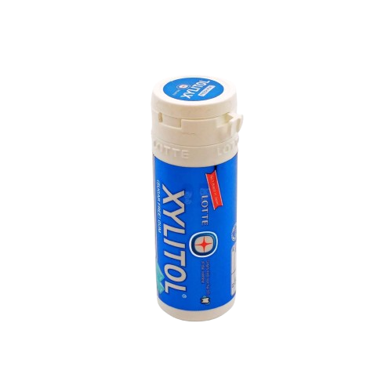

Xylitol makes a great sugar alternative as it not only tastes very similar to sugar but it’s also naturally derived. It can be found in most living things including trees, fruits, plants and even people. Of all these, birch trees are one of the best sources as they’re naturally very rich in xylose. And if you’ve ever been to Finland, you’ll have probably noticed they have plenty of stunning birch forests. In fact, over 65% of Finland is covered by forest, lots of this birch. This meant that in the early 1900s, when xylitol was first being made, it came from Finnish birch trees.
During World War II, Finland then suffered a major sugar shortage and with their large birch forests, they turned to xylitol as an alternative and consumption became widespread. While scientists weren’t yet aware of the dental benefits, they had learned that xylitol was insulin-independent (it metabolizes in the body without using insulin) and is therefore a great sugar-alternative for diabetics.
In the early 1970s, it was Finnish researchers that made a hugely important breakthrough. At the University of Turku they discovered that xylitol could also affect the bacteria in the mouth that caused decay. Several studies followed at Turku which showed that xylitol could indeed reduce cavities. Chewing gum was identified as the perfect way to get people to eat xylitol and in 1975, the world’s first xylitol chewing gum was launched in Finland. Xylitol has now become synonymous with both Finland and dental care.
This coincided with something else very significant in Finland. In 1972 the Law on Public Health came into effect and the focus for oral care switched to preventative care. This was progressive policy making, way ahead of its time. 40 years later the UK is still trying to move away from its “drill and fill” culture (where you see a dental professional to repair damage) to a preventative model (where you see them to get help and advice to keep teeth healthy and avoid damage in the first place).
The fact that xylitol is such a useful tool for preventative dentistry (as it kills the bacteria which cause plaque and decay), meant that Finland further embraced xylitol with xylitol sweets, mints and chewing gum becoming very widely used.
Nowadays, not only do Finnish adults consume large quantities of xylitol products but also around 90% of Finnish kindergartens offer xylitol sweets to all children on a daily basis. This means that school kids are getting into healthy dental habits from a very early age.
This has even made its way into policy with the Finnish National Institute of Health & Welfare (2013) recommending that all 1 to 6 year olds are given xylitol confectionery after meals. The Ministry of Social Affairs and Health (2013) also recommends that publicly funded xylitol products are provided to children to improve dental health and to decrease the costs of public dental care.
Because of the country’s natural resources and progressive approach to healthcare, xylitol has become an everyday part of Finnish life. We are very far away from that in the UK but at Peppersmith we’re doing everything we can to spread the word about the benefits of xylitol and its role in preventative dental care. You can find our more about the 100% xylitol products we make here.